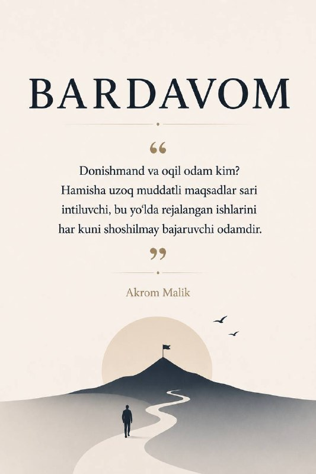

Uzoqni ko‘ra bilish uchun tartibli va tiniq fikrlash talab etiladi. Shunchaki, bir…

Uzoqni ko‘ra bilish uchun tartibli va tiniq fikrlash talab etiladi. Shunchaki, bir savol berish lozim: “Bu ishimning oxiri qanday bo‘ladi?” Bu savolning javobini bilish uchun yetti o‘lchashga ehtiyoj bor. Asosiysi, inson maqsadini aniqlashtirishi kerak.
Maqsad ikkiga bo‘linadi: maqsadlarning maqsadi hamda unga yetkazuvchi maqsadlar. Maqsadlarning maqsadi g‘oyalarning g‘oyasi demakdir. Buni aniqroq tushunish uchun bunday misol keltirsak bo‘ladi: uy qurishni istayman. Uy qurish uchun menga yer kerak (1); uyning suvrati (tarhi) lozim (2); uyning chizmasi asosida yerni kavlashim darkor (3); kavlangan joyning tag tuprog‘ini cho‘ktirib zichlashga majburman (4); sement, shag‘al, qum sotib olaman (5); bularni aralashtirib kavlangan joylarga tartib bilan to‘kib, poydevorni ko‘taraman (6); uyimning balandligi qancha bo‘lsa, shunga muvofiq ravishda menga bir necha ming dona g‘isht kerak (7); hasharga qarindoshlar va qo‘shnilarni chaqiraman (8); hamma birgalashib g‘isht teramiz (9)– shu tariqa bir kun ichida uyning devorini ko‘tarib olamiz; uyning tomini yopish uchun to‘sin, qamish, shifer va hokazolarni olib kelaman (10)...
Bu o‘rinda uy – maqsadlarning maqsadiga misol; uni qurish uchun qilinadigan ishlar – biz ularning o‘ntasini sanab chiqdik – unga yetkazuvchi kichik maqsadlardir. Kichik maqsadlarning maqsadi – uy hisoblanadi. Ya’ni uy g‘oyalarning g‘oyasini ifodalamoqda.
Uyni to‘kis qurib bo‘lishim uchun qiladigan ishlarim ham maqsad sanaladi va ularni qilmay turib bosh maqsadimga erisha olmayman. Tasavvur qilyapmanki, o‘ttiz kun ichida uy quraman. Har bir kun qiladigan ishlarim rejasini yozib chiqdim. Ertalab esa kayfiyatim yo‘q holda uyg‘ondim. O‘rnimdan turgim kelmadi. Shu bilan peshin vaqti bo‘ldi. Birinchi kun ishini bajarmadim, ertaga qilaman dedim. Yana ertalab kayfiyatim yaxshi uyg‘ondim-u, ilhomim kelmadi; shu sababli ilhom kelishini kutib vaqt o‘tkazdim. Undan keyingi kun ilhomim ham, kayfiyatim ham joyida edi, lekin qolib ketgan ikki kun sababli hafsalam pir bo‘ldi. Kelasi kun qandaydir ko‘tarinkilik bilan hammasini qoyillataman dedim-u, ozgina ishlab tashlab qo‘ydim, bahona chiqdi – ulfatlarim chaqirib ketishdi...
Oradan o‘ttiz kun o‘tdi, rejam amalga oshmadi, uy qurilmadi. Lekin qo‘shnim ham xuddi mendek reja tuzgan edi, uning uyi esa bitibdi.
Katta maqsad uchun kichik maqsadlarni amalga oshirmoq lozim ekan. O‘z vaqtida qilinmagan ish ertaga og‘ir yukka aylanadi – qolgan ishga qor yog‘ar.
Donishmand va oqil odam kim? Hamisha uzoq muddatli maqsadlar sari intiluvchi, bu yo‘lda rejalangan ishlarini har kuni shoshilmay bajaruvchi odamdir. Uning mehnati bugun meva bermas, lekin ertaga u hammadan ko‘ra kattaroq natijani qo‘lga kiritadi, yagona yutug‘i – maqsadni belgiladi; unga yetish uchun kichik maqsadlarni aniqladi; har kuni rejadagi ishlarini bajardi, to‘xtamadi. Bu holda na tushkunlik, na dangasalik uni qaytara oldi.
Akrom MALIK